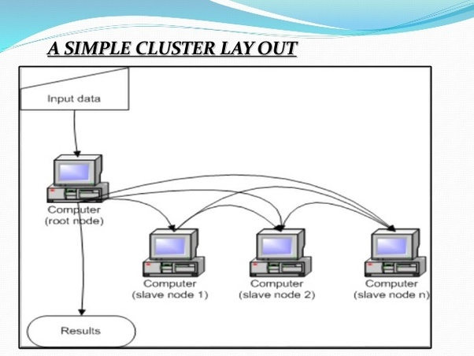

Cluster Computing
A computer cluster is a set of loosely or tightly connected computers that work together so that, in many respects, they can be viewed as a single system. Unlike grid computers, computer clusters have each node set to perform the same task, controlled and scheduled by software.
The components of a cluster are usually connected to each other through fast local area networks, with each node (computer used as a server) running its own instance of an operating system.

Load-balancing clusters are configurations in which cluster-nodes share computational workload to provide better overall performance. For example, a web server cluster may assign different queries to different nodes, so the overall response time will be optimized.
Cluster Can be classified into two categories Open and Close Cluster
Open Cluster: All nodes in Open Cluster are needed IPs, and that are accessible through internet/web, that cause more destruction
Close Cluster: On the other hand Close Cluster are hide behind the gateway node and provide better security.
Types of cluster computing
- 1. Load-balancing clusters: As the name implies, this system is used to distribute workload across multiple computers. That system distributes the processing load as possible across a cluster of computers.
- 2. High availability (HA) clusters: A high availability clusters (HA cluster) are the bunch of computers that can reliably utilise for redundant operations in the event of nodes failure in Cluster computing.
- 3. High performance (HP) clusters: This computer networking methodology use supercomputers and Cluster computing to solve advanced computation problems.
Advantages of Cluster Computers
- Cost efficiency: In a Cluster computing Cost efficiency is the ratio of cost to output, that is the connecting group of the computer as computer cluster much cheaper as compared to mainframe computers.
- Processing speed: The Processing speed of computer cluster is the same as a mainframe computer.
- Expandability: The best benefit of Cluster Computing is that it can be expanded easily by adding the additional desktop workstation to the system.
- High availability of resources: If any node fails in a computer cluster, another node within the cluster continue to provide uninterrupted processing. When a mainframe system fails, the entire system fails.